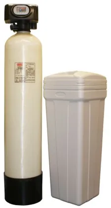
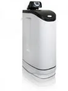
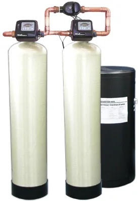
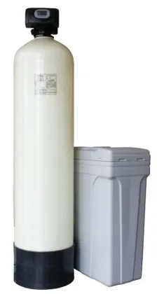
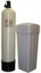
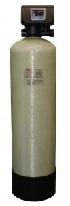

Dedurizare, deferizare, denitrificare
Calcar, fier, mangan și nitrați
Echipamente automate care corectează parametrii apei din rețea, din puțuri și din foraje, dimensionate după analiza apei.

Dedurizatoare automate
Rășinile cationice rețin calcarul, eliminat apoi prin regenerare cu saramură. În plus față de dedurizatoarele obișnuite, ale noastre au un pat de siguranță din patru straturi de cuarțită, care curăță mecanic rășina și reține turbiditatea.
- Debit: 1,4–7 m³/h
- Rășini: 17–125 l
- Racorduri: ¾”–2”
- Presiune de lucru: 2–6 bar
- Temperatură: 5–40 °C
- Alimentare: 220 V / 50 Hz, programator la 12 V
Parametri tehnici
| Debit max. (m³/h) | Rășini (l) | Racorduri | Vas saramură (l) | Înălțime (mm) | Ø (mm) |
|---|
| 1.4 | 20 | 3/4” | 70 | 1126 | 207 |
| 1.5 | 17 | 3/4” | 25 | 605 | 258 |
| 1.5 | 25 | 3/4” | 70 | 897 | 258 |
| 2.0 | 33 | 3/4” | 70 | 1126 | 258 |
| 2.4 | 33 | 1” | 70 | 1126 | 258 |
| 2.0 | 40 | ¾” | 70 | 1386 | 258 |
| 2.4 | 40 | 1” | 70 | 1386 | 258 |
| 2.0 | 30 | ¾” | 70 | 897 | 280 |
| 2.6 | 30 | 1” | 70 | 897 | 280 |
| 2.0 | 39 | ¾” | 70 | 1126 | 280 |
| 2.8 | 39 | 1” | 70 | 897 | 280 |
| 2.0 | 63 | ¾” | 100 | 1338 | 310 |
| 3.2 | 39 | 1” | 100 | 1338 | 310 |
| 2.0 | 58 | ¾” | 100 | 1145 | 336 |
| 3.6 | 58 | 1” | 100 | 1145 | 336 |
| 2.0 | 70 | ¾” | 100 | 1398 | 336 |
| 4.0 | 70 | 1” | 100 | 1398 | 336 |
| 4.0 | 45 | ¾” | 100 | 735 | 413 |
| 4.5 | 45 | 1” | 100 | 735 | 413 |
| 2.0 | 85 | ¾” | 140 | 1145 | 413 |
| 4.5 | 85 | 1” | 140 | 1145 | 413 |
| 6.0 | 45 | 2” | 140 | 1145 | 413 |
| 2.0 | 125 | ¾” | 145 | 1671 | 413 |
| 4.5 | 125 | 1” | 145 | 1671 | 413 |
| 7.0 | 125 | 2” | 145 | 1671 | 413 |

Dedurizatoare automate cabinate
Butelia, vasul de saramură și valva formează o singură unitate compactă, ușor de amplasat în locuințe, birouri și spații mici.
- Debit: 0,9–2,4 m³/h
- Rășini: 5–33 l
- Racorduri: ¾”–1”
Parametri tehnici
| Debit max. (m³/h) | Rășini (l) | Racorduri | Înălțime (mm) | Adâncime (mm) | Lățime (mm) |
|---|
| 0.9 | 5 | ¾” | 500 | 380 | 200 |
| 1.5 | 10 | ¾” | 600 | 470 | 330 |
| 2.0 | 25 | ¾” | 1050 | 570 | 350 |
| 2.0 | 33 | ¾” | 1330 | 530 | 330 |
| 2.4 | 33 | 1” | 1330 | 530 | 330 |

Dedurizatoare automate duplex
Două coloane care se regenerează pe rând: una lucrează, cealaltă se regenerează sau stă în așteptare. Apă dedurizată fără întrerupere, 24 de ore din 24.
- Debit: 1,4–7 m³/h
- Rășini: 2 × 17 – 2 × 125 l
- Racorduri: ¾”–2”
Parametri tehnici
| Debit max. (m³/h) | Rășini (l) | Racorduri | Vas saramură (l) | Înălțime (mm) | Ø (mm) |
|---|
| 1.4 | 20-20 | 3/4” | 70 | 1126 | 207 |
| 1.5 | 17-17 | 3/4” | 25 | 605 | 258 |
| 1.5 | 25-25 | 3/4” | 70 | 897 | 258 |
| 2.0 | 33-33 | 3/4” | 70 | 1126 | 258 |
| 2.4 | 33-33 | 1” | 70 | 1126 | 258 |
| 2.0 | 40-40 | ¾” | 70 | 1386 | 258 |
| 2.4 | 40-40 | 1” | 70 | 1386 | 258 |
| 2.0 | 30-30 | ¾” | 70 | 897 | 280 |
| 2.6 | 30-30 | 1” | 70 | 897 | 280 |
| 2.0 | 39-39 | ¾” | 70 | 1126 | 280 |
| 2.8 | 39-39 | 1” | 70 | 897 | 280 |
| 2.0 | 63-63 | ¾” | 100 | 1338 | 310 |
| 3.2 | 39-39 | 1” | 100 | 1338 | 310 |
| 2.0 | 58-58 | ¾” | 100 | 1145 | 336 |
| 3.6 | 58-58 | 1” | 100 | 1145 | 336 |
| 2.0 | 70-70 | ¾” | 100 | 1398 | 336 |
| 4.0 | 70-70 | 1” | 100 | 1398 | 336 |
| 4.0 | 45-45 | ¾” | 100 | 735 | 413 |
| 4.5 | 45-45 | 1” | 100 | 735 | 413 |
| 2.0 | 85-85 | ¾” | 140 | 1145 | 413 |
| 4.5 | 85-85 | 1” | 140 | 1145 | 413 |
| 6.0 | 45-45 | 2” | 140 | 1145 | 413 |
| 2.0 | 125-125 | ¾” | 145 | 1671 | 413 |
| 4.5 | 125-125 | 1” | 145 | 1671 | 413 |
| 7.0 | 125-125 | 2” | 145 | 1671 | 413 |

Dedurizatoare automate industriale
Pentru debite mari în fabrici, centrale termice, hoteluri și spălătorii, cu același pat de siguranță din cuarțită multistrat.
- Debit: 4,5–20 m³/h
- Rășini: 180–738 l
- Racorduri: 1”–2”
- Vas de saramură: 190–920 l
Parametri tehnici
| Debit max. (m³/h) | Rășini (l) | Racorduri | Vas saramură (l) | Înălțime (mm) |
|---|
| 4.5 | 180 | 1” | 190 | 1722 |
| 7.0 | 180 | 1 ½” | 340 | 1722 |
| 9.0 | 250 | 1 ½” | 340 | 1721 |
| 11.0 | 355 | 1 ½” | 340 | 1918 |
| 16.0 | 355 | 2” | 460 | 1918 |
| 18.0 | 530 | 2” | 670 | 1836 |
| 20.0 | 738 | 2” | 920 | 1856 |

Dedurizatoare cu regenerare manuală
Varianta economică, fără alimentare electrică: regenerarea se pornește dintr-o valvă mecanică manuală.
- Debit: 1,5–3,6 m³/h
- Rășini: 17–63 l
- Racorduri: ¾”–1”
Parametri tehnici
| Debit max. (m³/h) | Rășini (l) | Racorduri | Vas saramură (l) | Înălțime (mm) | Ø (mm) |
|---|
| 1.5 | 17 | ¾” | 25 | 605 | 258 |
| 1.7 | 20 | ¾” | 70 | 1126 | 207 |
| 2.0 | 25 | ¾” | 70 | 1126 | 207 |
| 2.4 | 33 | 1” | 70 | 1126 | 258 |
| 2.4 | 40 | 1” | 70 | 1386 | 258 |
| 2.6 | 40 | 1” | 70 | 897 | 280 |
| 2.8 | 39 | 1” | 70 | 1126 | 280 |
| 3.2 | 63 | 1” | 100 | 1338 | 310 |
| 3.6 | 58 | 1” | 100 | 1145 | 336 |

Deferizatoare automate cu BIRM
Masa filtrantă BIRM acționează ca un catalizator: oxidează fierul dizolvat, care precipită sub formă de fulgi ușor de filtrat. Fierul reținut se elimină periodic prin spălare inversă automată. BIRM nu se consumă și nu are nevoie de regenerare chimică.
- Reține: fier și mangan
- Debit: 1,5–10 m³/h
- Masă filtrantă: 75–540 l BIRM
- Racorduri: 1”
- Condiții: pH 6,8–9 (8–8,5 dacă există mangan), fără hidrogen sulfurat
- Presiune de lucru: 2–6 bar
- Temperatură: 5–40 °C
- Alimentare: 220 V / 50 Hz, programator la 12 V
Parametri tehnici
| Debit max. (m³/h) | Birm (l) | Racorduri | Înălțime (mm) | Ø (mm) |
|---|
| 1.5 | 75 | 1” | 1398 | 336 |
| 2.0 | 90 | 1” | 1344 | 363 |
| 3.0 | 125 | 1” | 1671 | 413 |
| 4.0 | 175 | 1” | 1722 | 491 |
| 5.0 | 250 | 1” | 1721 | 555 |
| 6.0 | 300 | 1” | 1717 | 635 |
| 7.0 | 380 | 1” | 1918 | 635 |
| 8.0 | 440 | 1” | 1836 | 780 |
| 9.0 | 490 | 1” | 1836 | 780 |
| 10.0 | 540 | 1” | 1836 | 780 |
Deferizatoare automate cu Pyrolox
Pyrolusita (bioxid de mangan) este catalizatorul care oxidează fierul, manganul și hidrogenul sulfurat din apă. Se folosește în amestec cu nisip și nu necesită regenerare cu permanganat de potasiu: este suficientă o dozare de clor la spălarea inversă.
- Reține: fier, mangan și hidrogen sulfurat
- Debit: 1,5–10 m³/h
- Racorduri: 1”
- Standard: UNI ISO EN 13752, apă pentru consum uman
- Presiune de lucru: 2–6 bar
- Temperatură: 5–40 °C
- Alimentare: 220 V / 50 Hz, programator la 12 V
Parametri tehnici
| Debit max. (m³/h) | Racorduri | Înălțime (mm) | Ø (mm) |
|---|
| 1.5 | 1” | 1398 | 336 |
| 2.0 | 1” | 1344 | 363 |
| 3.0 | 1” | 1671 | 413 |
| 4.0 | 1” | 1722 | 491 |
| 5.0 | 1” | 1721 | 555 |
| 6.0 | 1” | 1717 | 635 |
| 7.0 | 1” | 1918 | 635 |
| 8.0 | 1” | 1836 | 780 |
| 9.0 | 1” | 1836 | 780 |
| 10.0 | 1” | 1836 | 780 |
Deferizatoare automate cu Greensand
Deferizator și demanganizator complet automat, cu regenerarea straturilor filtrante. Greensand oxidează fierul și manganul solubili, care rămân în filtru și se elimină la spălare. La prima punere în funcțiune se regenerează cu permanganat de potasiu.
- Reține: fier, mangan, hidrogen sulfurat, arsen, radiu
- Debit: 1,5–10 m³/h
- Racorduri: 1”
- Presiune de lucru: 2–6 bar
- Temperatură: 5–40 °C
- Alimentare: 220 V / 50 Hz, programator la 12 V
Parametri tehnici
| Debit max. (m³/h) | Racorduri | Înălțime (mm) | Ø (mm) |
|---|
| 1.5 | 1” | 1398 | 336 |
| 2.0 | 1” | 1344 | 363 |
| 3.0 | 1” | 1671 | 413 |
| 4.0 | 1” | 1722 | 491 |
| 5.0 | 1” | 1721 | 555 |
| 6.0 | 1” | 1717 | 635 |
| 7.0 | 1” | 1918 | 635 |
| 8.0 | 1” | 1836 | 780 |
| 9.0 | 1” | 1836 | 780 |
| 10.0 | 1” | 1836 | 780 |

Denitrificatoare automate
Elimină nitrații din apă cu rășini anionice, regenerate cu saramură. Varianta duplex furnizează apă denitrificată fără întrerupere.
- Variante: simplex și duplex
- Debit: 1–7 m³/h
- Rășini: 15–145 l pe coloană
Parametri tehnici
Denitrificatoare automate| Debit max. (m³/h) | Rășini (l) | Vas saramură (l) | Înălțime (mm) | Ø (mm) |
|---|
| 1.0 | 15 | 70 | 1126 | 207 |
| 2.0 | 25 | 100 | 1228 | 233 |
| 3.0 | 50 | 100 | 1386 | 258 |
| 4.0 | 75 | 120 | 1398 | 336 |
| 5.0 | 100 | 120 | 1671 | 413 |
| 6.0 | 125 | 145 | 1671 | 413 |
| 7.0 | 145 | 145 | 1671 | 413 |
Denitrificatoare automate duplex| Debit max. (m³/h) | Rășini (l) | Vas saramură (l) | Înălțime (mm) | Ø (mm) |
|---|
| 1.0 | 15-15 | 100 | 1126 | 207 |
| 2.0 | 25-25 | 100 | 1228 | 233 |
| 3.0 | 50-50 | 100 | 1386 | 258 |
| 4.0 | 75-75 | 120 | 1398 | 336 |
| 5.0 | 100-100 | 120 | 1671 | 413 |
| 6.0 | 125-125 | 145 | 1671 | 413 |
| 7.0 | 145-145 | 145 | 1671 | 413 |